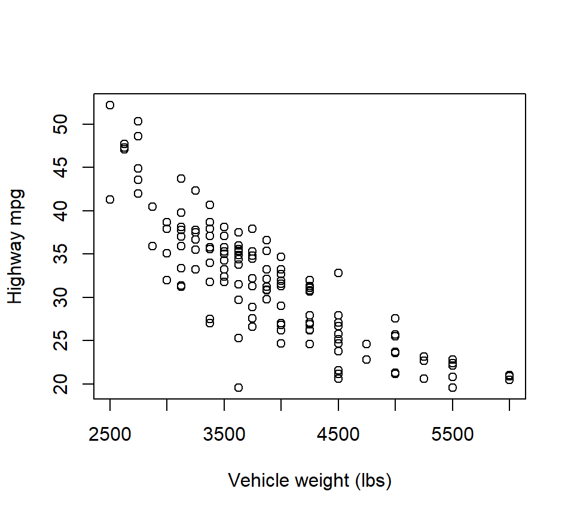
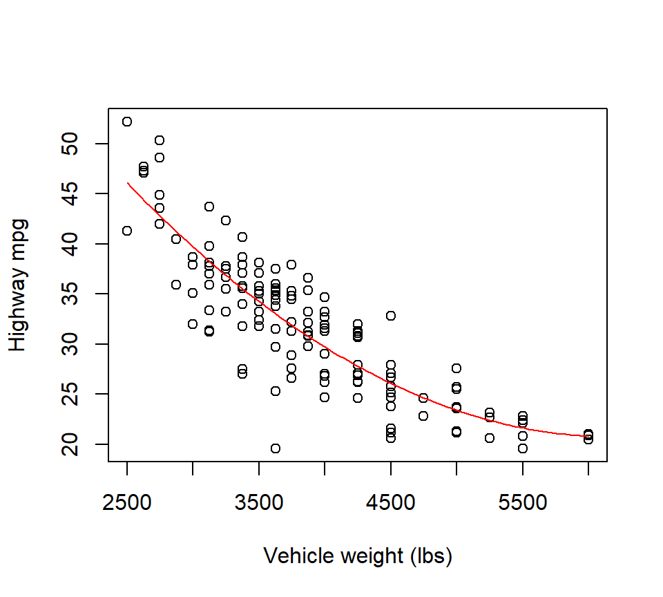
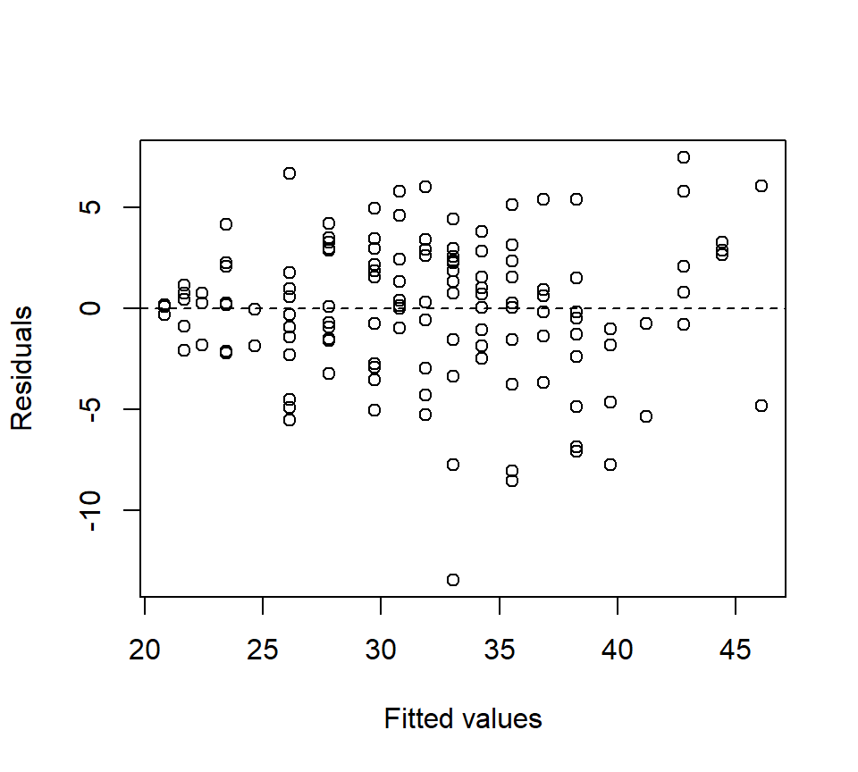
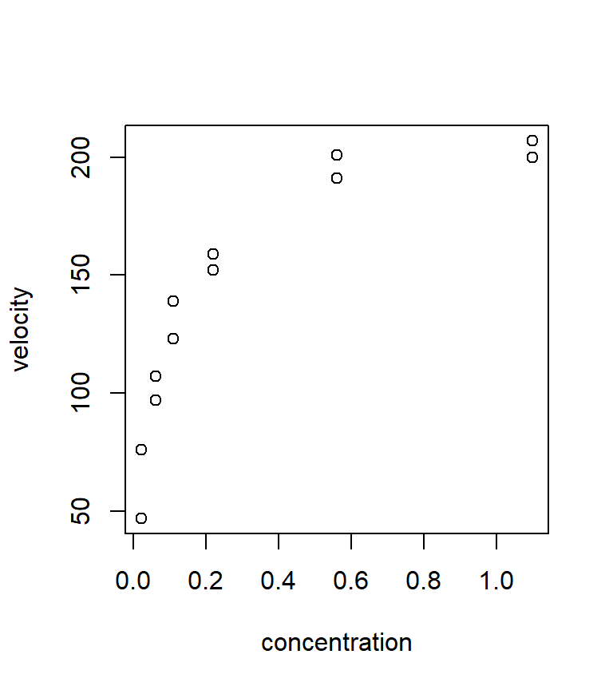
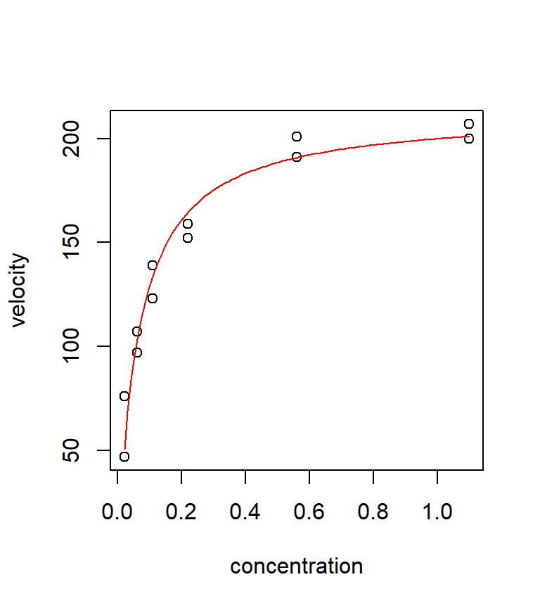
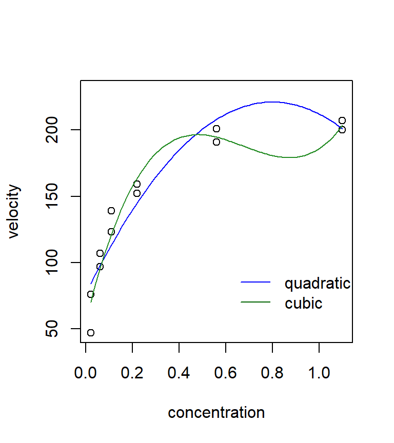

Chapter 3 Non-linear regression
In this chapter, we examine several methods for characterizing non-linear associations between a predictor variable and the response. To keep things simple, we return to focusing on settings with a single predictor. However, the ideas in this chapter can readily be incorporated into models with several predictor variables.
3.1 Polynomial regression
Polynomial regression uses the machinery of multiple regression to model non-linear relationships. A \(k^{th}\) order polynomial regression model is \[ y=\beta_0 +\beta_1 x+\beta_2 x^2 +\beta_3 x^{3} +\ldots +\beta_k x^{k} +\varepsilon \] where the error term is subject to the standard regression assumptions. In practice, the most commonly used models are quadratic (\(k=2\)) and cubic (\(k=3\)) polynomials.
Before proceeding, a historical note is worthwhile. It used to be that polynomial regression was the only way to accommodate non-linear relationships in regression models. In the present day, non-linear least squares allows us to fit a much richer set of non-linear models to data. However, in complex models (especially complex ANOVA models for designed experiments), there are still cases where it is easier to add a quadratic term to accommodate a non-linear association than it is to adopt the machinery of non-linear least squares. Thus, it is still worthwhile to know a little bit about polynomial regression, but don’t shoehorn every non-linear association into a polynomial regression if an alternative non-linear model is more suitable.
Example. In the cars data, the relationship between highway mpg and vehicle weight is clearly non-linear:
cars <- read.table("data/cars.txt", head = T, stringsAsFactors = T)
with(cars, plot(mpghw ~ weight, xlab = "Vehicle weight (lbs)", ylab = "Highway mpg"))
To fit a quadratic model, we could manually create a predictor equal to weight-squared. Or, in R, we could create the weight-squared predictor within the call to “lm” by using the following syntax:
##
## Call:
## lm(formula = mpghw ~ weight + I(weight^2), data = cars)
##
## Residuals:
## Min 1Q Median 3Q Max
## -13.4386 -1.8216 0.1789 2.3617 7.5031
##
## Coefficients:
## Estimate Std. Error t value Pr(>|t|)
## (Intercept) 9.189e+01 6.332e+00 14.511 < 2e-16 ***
## weight -2.293e-02 3.119e-03 -7.353 1.64e-11 ***
## I(weight^2) 1.848e-06 3.739e-07 4.942 2.24e-06 ***
## ---
## Signif. codes: 0 '***' 0.001 '**' 0.01 '*' 0.05 '.' 0.1 ' ' 1
##
## Residual standard error: 3.454 on 136 degrees of freedom
## Multiple R-squared: 0.7634, Adjusted R-squared: 0.7599
## F-statistic: 219.4 on 2 and 136 DF, p-value: < 2.2e-16In the quadratic regression \(y=\beta_0 +\beta_1 x+\beta_2 x^2 +\varepsilon\), the test of \(H_0\): \(\beta_2=0\) vs. \(H_a\): \(\beta_2 \ne 0\) is tantamount to a test of whether the quadratic model provides a significantly better fit than the linear model. In this case, we can conclusively reject \(H_0\): \(\beta_2=0\) in favor of \(H_a\): \(\beta_2 \ne 0\) , and thus conclude that the quadratic model provides a significantly better fit than the linear model.
However, in the context of the quadratic model, the test of \(H_0\): \(\beta_1=0\) vs. \(H_a\): \(\beta_1 \ne 0\) doesn’t give us much useful information. In the context of the quadratic model, the null hypothesis \(H_0\): \(\beta_1=0\) is equivalent to the model \(y=\beta_0 +\beta_2 x^2 +\varepsilon\). This is a strange model, and there is no reason why we should consider it. Thus, we disregard the inference for \(\beta_1\), and (by similar logic) we disregard the inference for \(\beta_0\) as well.
If a quadratic model is good, will the cubic model \(y=\beta_0 +\beta_1 x+\beta_2 x^2 +\beta_3 x^{3} +\varepsilon\) be even better? Let’s see:
##
## Call:
## lm(formula = mpghw ~ weight + I(weight^2) + I(weight^3), data = cars)
##
## Residuals:
## Min 1Q Median 3Q Max
## -13.247 -1.759 0.281 2.411 7.225
##
## Coefficients:
## Estimate Std. Error t value Pr(>|t|)
## (Intercept) 1.164e+02 2.697e+01 4.318 3.03e-05 ***
## weight -4.175e-02 2.033e-02 -2.054 0.042 *
## I(weight^2) 6.504e-06 4.984e-06 1.305 0.194
## I(weight^3) -3.715e-10 3.966e-10 -0.937 0.351
## ---
## Signif. codes: 0 '***' 0.001 '**' 0.01 '*' 0.05 '.' 0.1 ' ' 1
##
## Residual standard error: 3.456 on 135 degrees of freedom
## Multiple R-squared: 0.7649, Adjusted R-squared: 0.7597
## F-statistic: 146.4 on 3 and 135 DF, p-value: < 2.2e-16In the cubic model, the test of \(H_0\): \(\beta_3=0\) vs. \(H_a\): \(\beta_3 \ne 0\) is tantamount to a test of whether the cubic model provides a significantly better fit than the quadratic model. The \(p\)-value associated with the cubic term suggests that the cubic model does not provide a statistically significant improvement in fit compared to the quadratic model.
At this point, you might wonder if we are limited only to comparing models of adjacent orders, that is, quadratic vs. linear, cubic vs. quadratic, etc. The answer is no — we can, for example, test whether a cubic model provides a significantly better fit than a linear model. To do so, we would have to test \(H_0\): \(\beta_2 = \beta_3 = 0\) in the cubic model. We can test this null hypothesis with an \(F\)-test.
Even though as cubic model does not offer a significantly better fit than a quadratic model, we have not necessarily ruled out the possibility that a higher-order polynomial model might provide a significantly better fit. However, higher-order polynomials (beyond a cubic) are typically difficult to justify on scientific grounds, and offend our sense of parsimony. Plus, a plot of the quadratic model and the associated residuals suggest that a quadratic model captures the trend in the data well:
with(cars, plot(mpghw ~ weight, xlab = "Vehicle weight (lbs)", ylab = "Highway mpg"))
quad <- with(cars, lm(mpghw ~ weight + I(weight^2)))
quad.coef <- as.vector(coefficients(quad))
quad.fit <- function(x) quad.coef[1] + quad.coef[2] * x + quad.coef[3] * x^2
curve(quad.fit, from = min(cars$weight), to = max(cars$weight), add = TRUE, col = "red")
plot(x = fitted(quad), y = resid(quad), xlab = "Fitted values", ylab = "Residuals")
abline(h = 0, lty = "dashed")
Therefore, the quadratic model clearly provides the best low-order polynomial fit to these data.
Finally, it doesn’t make sense to consider models that include higher-order terms without lower-order terms. For example, we wouldn’t usually consider a cubic model without an intercept, or a quadratic model without a linear term. Geometrically, these models are constrained in particular ways. If such a constraint makes sense scientifically, entertaining the model may be warranted, but this situation arises only rarely. Thus, our strategy for fitting polynomial models is to choose the lowest-order model that provides a reasonable fit to the data, and whose highest-order term is statistically significant.
3.2 Non-linear least squares
Today, software is readily available to fit non-linear models to data using the same least-squares criterion that we use to estimate parameters in the linear model. The computation involved in fitting a non-linear model is fundamentally different from the computation involved in a linear model. A primary difference is that there is no all-purpose formula like \(\hat{\mathbf{\beta}}=\left(\mathbf{X}'\mathbf{X}\right)^{-1} \mathbf{X}'\mathbf{Y}\) available for the non-linear model. Therefore, parameter estimates (and their standard errors) have to be found using a numerical algorithm. (We’ll see more about what this means in a moment.) However, these algorithms are sufficiently well developed that they now appear in most common statistical software packages, such as R, SAS, or others. In R, the command that we use to fit a non-linear model is nls, for [n]on-linear [l]east [s]quares. In SAS, non-linear models can be fit using PROC NLIN.
Ex. Puromycin. This example is taken directly from the text Nonlinear regression analysis and its applications, by D.M. Bates and D.G. Watts Bates and Watts (1988). The data themselves are from Treloar (1974, MS Thesis, Univ of Toronto), who studied the relationship between the velocity of an enzymatic reaction (the response, measured in counts / minute\(^2\)) vs. the concentration of a particular substrate (the predictor, measured in parts per million). The experiment was conducted in the presence of the antibiotic Puromycin. The data are shown below.
puromycin <- read.table("data/puromycin.txt", head = T, stringsAsFactors = T)
with(puromycin, plot(velocity ~ conc, xlab = "concentration", ylab = "velocity"))
It is hypothesized that these data can be described by the Michaelis-Menten model for puromycin kinetics. The Michaelis-Menten model is: \[ y=\frac{\theta_1 x}{\theta_2 +x} +\varepsilon \] We continue to assume that the errors are iid normal with mean 0 and unknown but constant variance, i.e., \(\varepsilon_i \sim \mathcal{N}\left(0,\sigma_{\varepsilon}^2 \right)\).
With non-linear models, it is helpful if one can associate each of the parameters with a particular feature of the best-fitting curve. With these data, it seems that the best fitting curve is one that will increase at a decelerating rate until it approaches an asymptote. A little algebra shows that we can interpret \(\theta_1\) directly as the asymptote (that is, the limiting value of the curve as \(x\) gets large), and \(\theta_2\) as the value of the predictor at which the fitted curve reaches one-half of its asymptotic value.
To estimate parameters, we can define a least-squares criterion just as before. That is to say, the least-squares estimates of \(\theta_1\) and \(\theta_2\) will be the values that minimize \[ SSE=\sum_{i=1}^ne_i^2 = \sum_{i=1}^n\left(y_i -\hat{y}_i \right)^2 =\sum_{i=1}^n\left(y_i -\left[\frac{\hat{\theta }_1 x_i }{\hat{\theta }_{2} +x_i } \right]\right)^2 \]
Unlike with the linear model, there is no formula that can be solved directly to find the least-squares estimates. Instead, the least-squares estimates (and their standard errors) must be found using a numerical minimization algorithm. That is, the computer will use a routine to iteratively try different parameter values (in an intelligent manner) and proceed until it thinks it has found a set of parameter values that minimize the SSE (within a certain tolerance).
While we can trust that the numerical minimization routine implemented by R or SAS is a reasonably good one, all numerical minimization routines rely critically on finding a good set of starting values for the parameters. That is, unlike in a linear model, we must initiate the algorithm with a reasonable guess of the parameter values that is in the ballpark of the least-squares estimates. Here is where it is especially beneficial to have direct interpretations of the model parameters. Based on our previous analysis, we might choose a starting values of (say) \(\theta_1 = 200\) and \(\theta_2 = 0.1\). (Note that R will try to find starting values if they aren’t provided. However, the documentation to nls says that these starting values are a “very cheap guess”.)
Equipped with our choice of starting values, we are ready to find the least-squares estimates using nls:
fm1 <- nls(velocity ~ theta1 * conc / (theta2 + conc), data = puromycin,
start = list(theta1 = 200, theta2 = 0.1))
summary(fm1)##
## Formula: velocity ~ theta1 * conc/(theta2 + conc)
##
## Parameters:
## Estimate Std. Error t value Pr(>|t|)
## theta1 2.127e+02 6.947e+00 30.615 3.24e-11 ***
## theta2 6.412e-02 8.281e-03 7.743 1.57e-05 ***
## ---
## Signif. codes: 0 '***' 0.001 '**' 0.01 '*' 0.05 '.' 0.1 ' ' 1
##
## Residual standard error: 10.93 on 10 degrees of freedom
##
## Number of iterations to convergence: 6
## Achieved convergence tolerance: 6.093e-06In the call to nls, the first argument is a formula where we specify the non-linear model that we wish to fit. In this data set, “velocity” is the response and “conc” is the predictor. The last argument to nls is a list of starting values. The list contains one starting value for each parameter in the model. (In R, “lists” are like vectors, except that lists can contain things other than numbers.)
The output shows that the least squares estimates are \(\hat{\theta}_1 =212.7\) and \(\hat{\theta}_2 =0.064\). We also get estimated standard errors for each of the parameters, as well as \(t\)-tests of \(H_0\): \(\theta =0\) vs. \(H_a\): \(\theta \ne 0\). Note that the \(t\)-tests are not particularly useful in this case — there’s no reason why we would entertain the possibility that either \(\theta_1\) or \(\theta_2\) are equal to 0.
The last portion of the output from nls tells us about the performance of the numerical algorithm that was used to find the least-squares estimates. We won’t delve into this information here, but if you need to use non-linear least squares for something important, be sure to acquaint yourself with what this output means. Like linear least-squares, there are cases where non-linear least squares will not work (or will not work well), and it is this portion of the output that will give you a clue when you’ve encountered one of these cases.
We can examine the model fit by overlaying a fitted curve:
with(puromycin, plot(velocity ~ conc, xlab = "concentration", ylab = "velocity"))
mm.fit <- function(x) (212.7 * x) / (0.06412 + x)
curve(mm.fit, from = min(puromycin$conc), to = max(puromycin$conc), col = "red", add = TRUE)
It is instructive to compare the fit of this non-linear model with the fit from a few polynomial regressions. Neither the quadratic nor the cubic models fits very well in this case. Polynomial models often have a difficult time handling a data set with an asymptote. In this case, the Michaelis-Menten model clearly seems preferable.
quad <- lm(velocity ~ conc + I(conc^2), data = puromycin)
cubic <- lm(velocity ~ conc + I(conc^2) + I(conc^3), data = puromycin)
quad.coef <- as.vector(coefficients(quad))
quad.fit <- function(x) quad.coef[1] + quad.coef[2] * x + quad.coef[3] * x^2
cubic.coef <- as.vector(coefficients(cubic))
cubic.fit <- function(x) cubic.coef[1] + cubic.coef[2] * x + cubic.coef[3] * x^2 + cubic.coef[4] * x^3
with(puromycin, plot(velocity ~ conc, xlab = "concentration", ylab = "velocity", ylim = c(min(velocity), 230)))
curve(quad.fit, from = min(puromycin$conc), to = max(puromycin$conc), add = TRUE, col = "blue")
curve(cubic.fit, from = min(puromycin$conc), to = max(puromycin$conc), add = TRUE, col = "forestgreen")
legend(x = 0.6, y = 100, legend = c("quadratic", "cubic"), col = c("blue", "darkgreen"), lty = "solid", bty = "n")